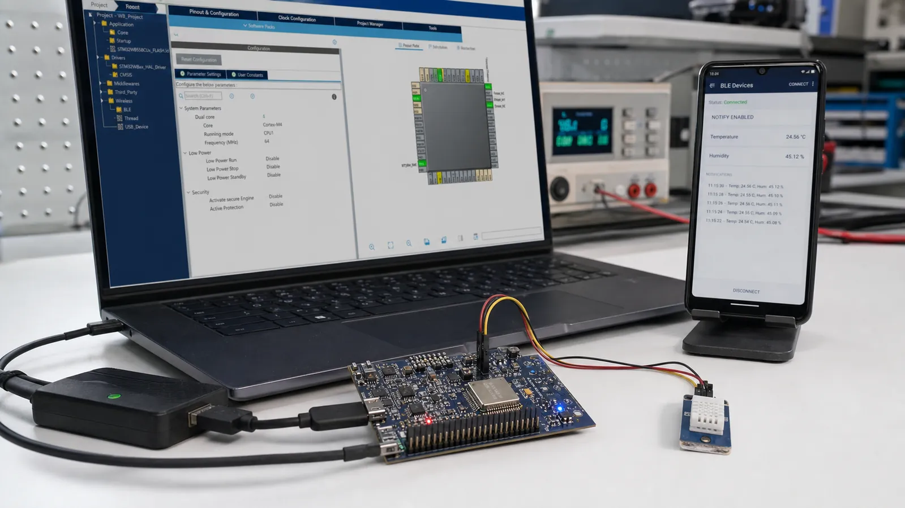

STM32WB اجرای برنامه و بخش بیسیم را میان هسته کاربردی و هسته شبکه تقسیم میکند. این معماری زمانبندی رادیو را از برنامه اصلی جدا میکند، اما نسخه Wireless Stack، FUS و پکیج Cube باید سازگار باشند.
برنامه کاربر معمولاً روی Cortex-M4 اجرا میشود و هسته شبکه وظایف رادیویی را انجام میدهد. ارتباط بین دو بخش از سازوکارهای بینپردازندهای عبور میکند. بنابراین خرابی Stack یا ناسازگاری Firmware میتواند حتی با کد کاربردی سالم مانع Advertising شود.
برد و پکیج Firmware درست را انتخاب کنید، BLE و سرویسهای موردنیاز را فعال کنید، Clock و RF را طبق برد مرجع تنظیم کنید و کد تولیدشده را در ناحیههای USER CODE توسعه دهید. فایل Release Notes پکیج را برای نسخه Stack و محدودیتها بخوانید.
در ابزار پیکربندی، UUID، اندازه Value، Property و Permission را تعریف کنید. هنگام تغییر سنسور، Value را در Attribute Database بهروزرسانی و در صورت فعالبودن Notification آن را ارسال کنید. رخداد Write از کلاینت را اعتبارسنجی کنید و طول ورودی را هرگز فرض نگیرید.
رخدادهای اتصال، قطع و Pairing را به State Machine برنامه تبدیل کنید. پیش از ورود به Stop Mode مطمئن شوید Scheduler و Stack بیسیم اجازه خواب میدهند. مصرف را روی برد نهایی اندازه بگیرید، چون LED دیباگ و Debugger میتوانند نتیجه را تغییر دهند.
یک Service محیطی با Characteristic دما بسازید. تایمر برنامه هر ثانیه سنسور را میخواند و فقط در صورت تغییر بیش از 0.1 درجه Value را بهروزرسانی میکند. پس از اطمینان از Notify، Tick و Log اضافی را کم و مصرف Stop Mode را اندازه بگیرید.